Cốt lõi điện ảnh: Video là một bản giao hưởng hình ảnh tôn vinh vẻ đẹp đất nước và con người Việt Nam từ miền núi phía Bắc (Hà Giang, Sông Nho Quế, Hẻm Tu Sản) đến miền Trung cổ kính (Hội An, hoa đăng, phố cổ) và kỳ quan vịnh biển Hạ Long. Video kết hợp nhịp nhàng giữa Intro 4.9s tạo khoảng lặng (Breath Hook) với chuỗi 14 nhát cắt nhanh (Fast Montage ~1.0s/shot) đồng bộ hoàn hảo từng nhịp trống, mang lại trải nghiệm thị giác cuốn hút và cảm xúc tự hào bất tận.
| Shot | Timestamp | Cỡ cảnh & Góc máy | Nội dung thị giác | Kỹ thuật chuyển cảnh |
|---|---|---|---|---|
| 01 | 0.00s - 4.88s (4.92s) | ELS Panoramic Landscape | Cờ Tổ quốc tung bay trên núi | Beat-Drop Match Cut / Scale Shift |
| 02 | 4.92s - 5.84s (0.96s) | WS Architectural Frontal | Cà phê Ban Công phố cổ Hội An | Motion Continuity Cut |
| 03 | 5.88s - 6.88s (1.04s) | Forward POV Tracking | Lướt xe máy đèo Hà Giang | Kinetic Match Cut / Leading Lines |
| 04 | 6.92s - 7.97s (1.08s) | MLS Cultural Portrait | Chàng trai thổi sáo Mông nương ngô | Cultural Rhythm Match |
| 05 | 8.01s - 9.01s (1.04s) | ECU Top-Down 45° | Chọn bưu thiếp lưu niệm vỉa hè | Tactile Memory Cut |
| 06 | 9.05s - 10.09s (1.08s) | MS Low Water Tracking | Thuyền nan nón lá trên sông ngọc | Mood Elevation Cut |
| 07 | 10.14s - 11.05s (0.96s) | Full Shot Gimbal Walk | Ngõ hoa giấy rợp nắng phố cổ | Center Frame Focus Cut |
| 08 | 11.09s - 13.01s (1.96s) | MCU Emotional Portrait | Nụ cười em bé gái vùng cao | Emotional Anchor Match Cut |
| 09 | 13.05s - 14.10s (1.08s) | Wide Low Angle Tilt-Up | Tuyến phố rợp bóng cờ đỏ sao vàng | Patriotic Color Rhythm |
| 10 | 14.14s - 15.22s (1.13s) | EWS Seascape Drift | Vịnh Hạ Long trùng điệp kỳ quan | Horizon Match Cut |
| 11 | 15.27s - 16.22s (1.00s) | Drone Aerial Extreme Wide | Flycam Hẻm Tu Sản - Sông Nho Quế | Macro-to-Micro Spatial Jump |
| 12 | 16.27s - 17.23s (1.00s) | High Angle 60° Down | Chợ phiên vùng cao rực rỡ thổ cẩm | Cultural Lifestyle Cut |
| 13 | 17.27s - 18.35s (1.13s) | MCU Night Glide | Hoa đăng đèn lồng phố cổ Hội An | Luminescence Match Cut |
| 14 | 18.39s - 19.44s (1.08s) | ECU High Close-Up | Chan nước dùng phở nóng bốc khói | Fluid Dynamic Action Cut |
| 15 | 19.48s - 20.52s (1.08s) | High Angle Waterfall | Tắm thác ngọc bích giữa rừng xanh | Nature Climax / Infinite Loop |
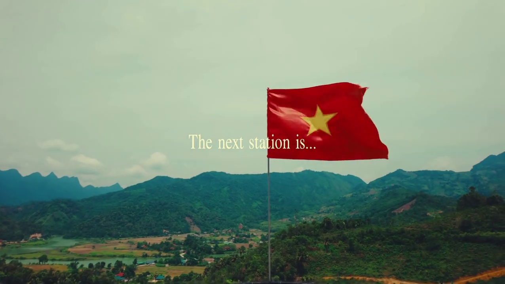
• Kỹ thuật Mồi (Out): Lá cờ đỏ sao vàng tung bay trong gió nhẹ làm điểm neo thị giác trung tâm, nhịp thở tĩnh tại 4.9s tạo khoảng lặng chờ đón beat drop bùng nổ.
• Kỹ thuật Nối (In): Sang Cảnh 2: Cut on Beat Drop (Nhát cắt đồng bộ nhịp trống dứt khoát) chuyển ngay về không gian kiến trúc phố cổ Hội An.
• Loại chuyển cảnh: Beat-Drop Match Cut / Spatial Scale Shift
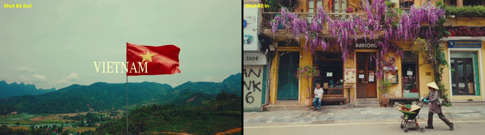
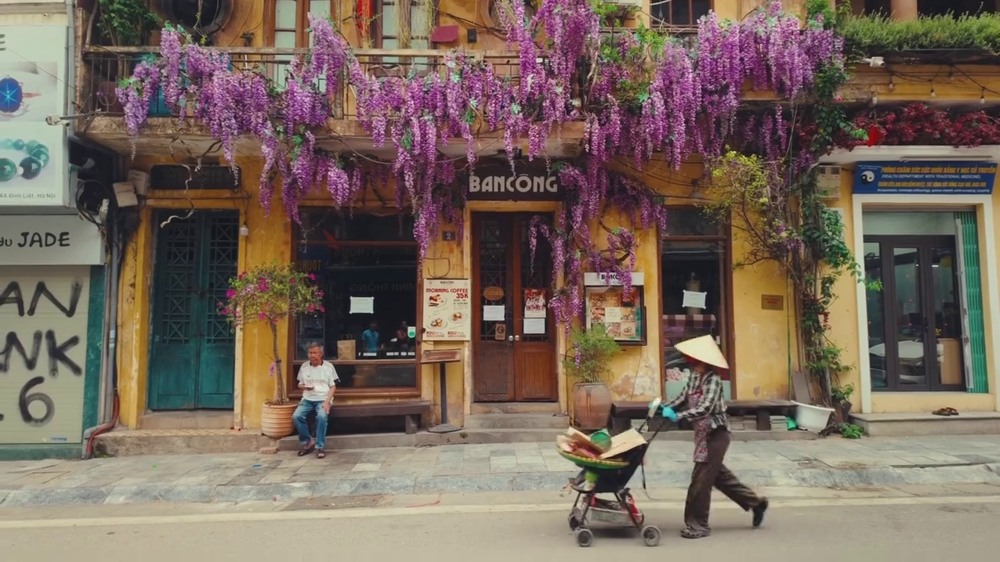
• Kỹ thuật Mồi (Out): Người phụ nữ nón lá di chuyển từ phải sang trái cắt ngang tiền cảnh tạo đường dẫn thị giác sinh động.
• Kỹ thuật Nối (In): Sang Cảnh 3: Cut on Movement Direction (Chuyển động tiến về phía trước) trên cung đường đèo hiểm trở.
• Loại chuyển cảnh: Motion Continuity / Cultural Motif Transition
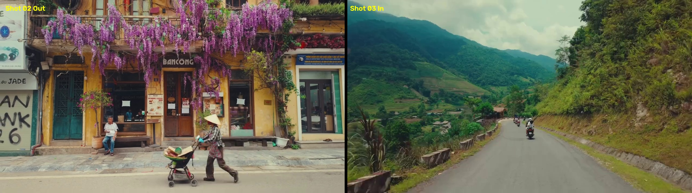
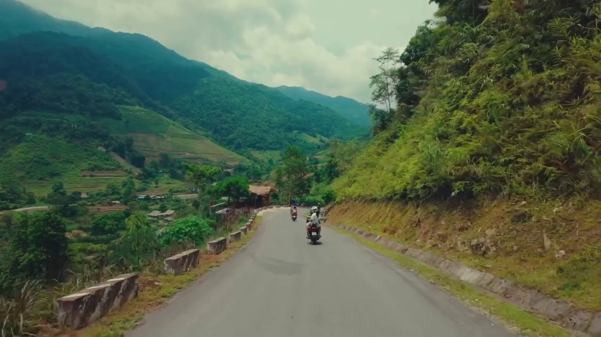
• Kỹ thuật Mồi (Out): Mặt đường lướt nhanh tạo vệt chuyển động hướng tâm (Leading Lines) hút người xem lao về phía trước.
• Kỹ thuật Nối (In): Sang Cảnh 4: Spatial Continuity (Cùng không gian đèo dốc Tây Bắc) dừng lại ở góc trung cảnh nghệ nhân thổi sáo.
• Loại chuyển cảnh: Kinetic Match Cut / Depth Rush Transition
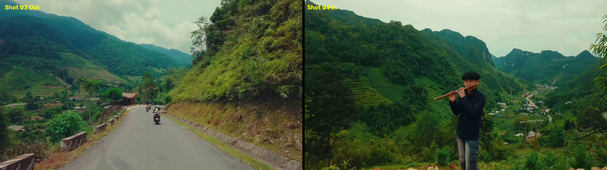
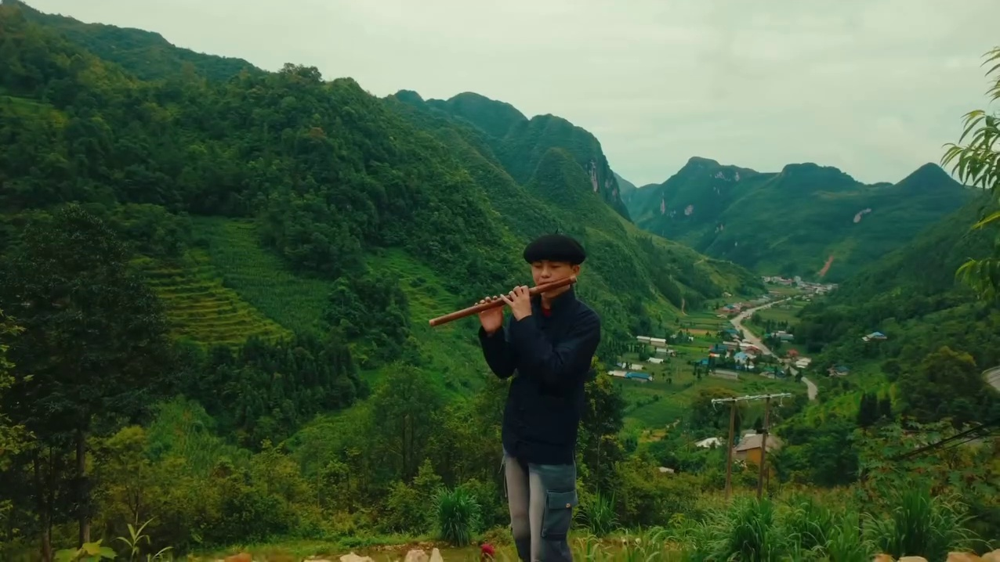
• Kỹ thuật Mồi (Out): Ngón tay bấm lỗ sáo và điệu bộ nghiêng người thổi nhạc tạo nhịp điệu âm nhạc thị giác.
• Kỹ thuật Nối (In): Sang Cảnh 5: Cut on Scale & Subject (Từ người biểu diễn sang du khách trải nghiệm) chuyển về góc nhìn cận cảnh vỉa hè.
• Loại chuyển cảnh: Cultural Rhythm Cut / Action-to-Detail Match
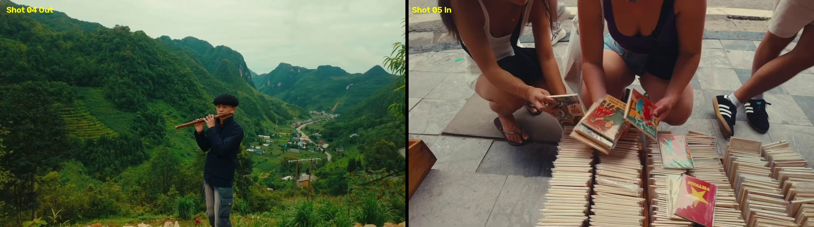
• Kỹ thuật Mồi (Out): Bàn tay lật giở từng tấm bưu thiếp tạo chuyển động vi mô tinh tế và cảm xúc gần gũi.
• Kỹ thuật Nối (In): Sang Cảnh 6: Cut on Activity (Trải nghiệm du khách) sang cảnh ngồi thuyền ngắm cảnh sông nước.
• Loại chuyển cảnh: Tactile Memory Cut / Narrative Association
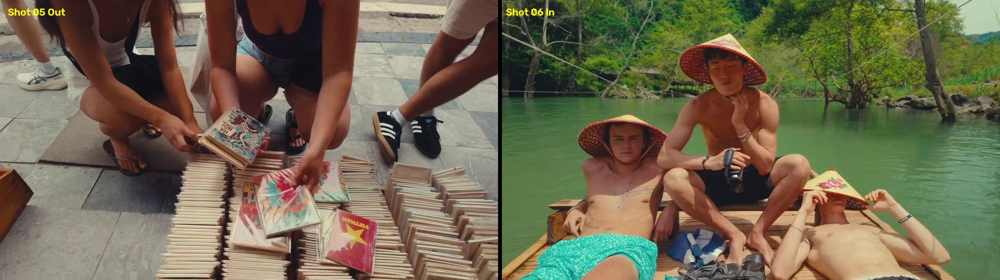
• Kỹ thuật Mồi (Out): Chiếc thuyền rẽ nước tiến thẳng, ánh nhìn và nụ cười rạng rỡ của du khách tạo năng lượng tự do.
• Kỹ thuật Nối (In): Sang Cảnh 7: Cut on Stroll (Chuyển từ du ngoạn sông nước sang dạo bước phố cổ).
• Loại chuyển cảnh: Environment Contrast / Mood Elevation
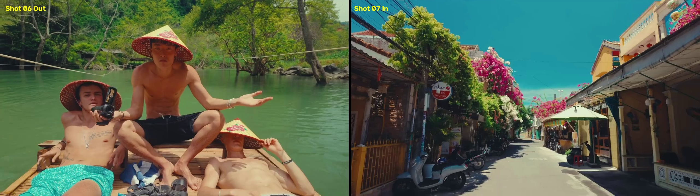
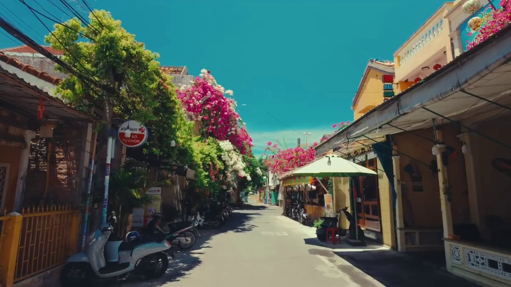
• Kỹ thuật Mồi (Out): Động tác đẩy máy (Push-in) tiến sâu vào ngõ tạo cảm giác lôi cuốn khám phá.
• Kỹ thuật Nối (In): Sang Cảnh 8: Center Subject Match (Điểm tụ trung tâm) sang nụ cười em bé vùng cao.
• Loại chuyển cảnh: Center Frame Focus Cut / Atmosphere Transition
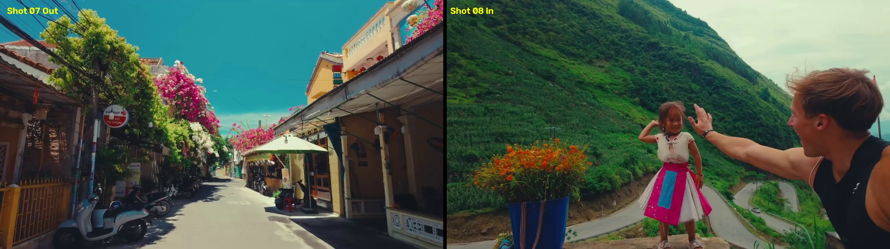
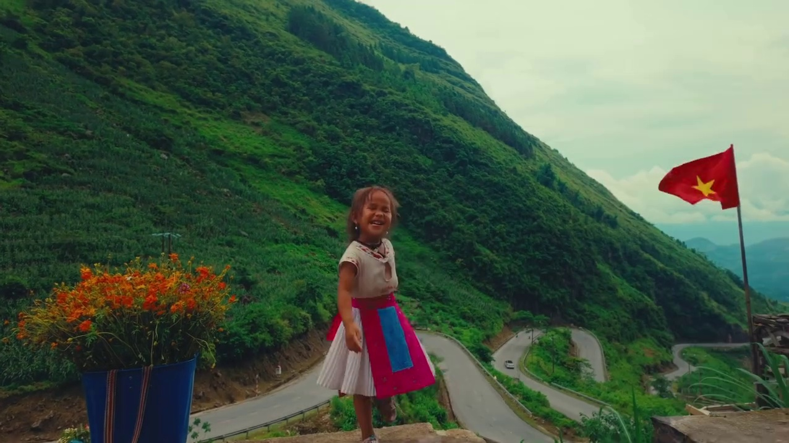
• Kỹ thuật Mồi (Out): Nụ cười tỏa sáng và ánh mắt trong veo của em bé giữ chân người xem trọn vẹn 2 giây (điểm nhấn cảm xúc cao nhất video).
• Kỹ thuật Nối (In): Sang Cảnh 9: Flag Match Cut (Nối hình ảnh lá cờ đỏ phía sau em bé sang hàng cờ đỏ rợp phố).
• Loại chuyển cảnh: Emotional Anchor Match Cut / Thematic Echo
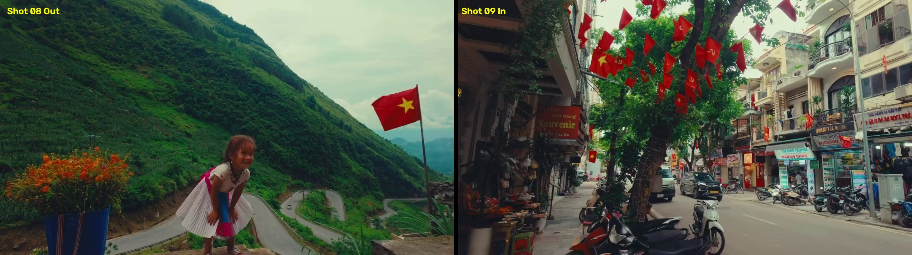
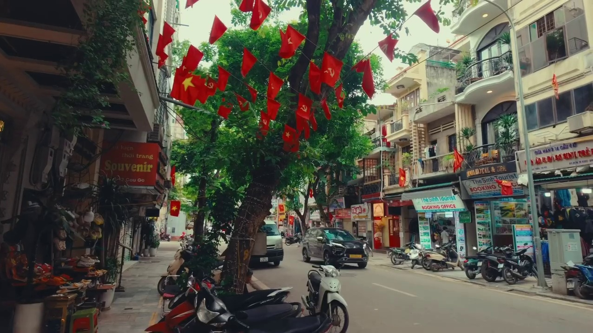
• Kỹ thuật Mồi (Out): Những dải cờ đỏ bay phần phật trong gió dẫn dắt ánh nhìn lên cao khoáng đạt.
• Kỹ thuật Nối (In): Sang Cảnh 10: Horizon Match Cut (Nối từ đường chân trời phố xá sang đường chân trời mênh mông biển vịnh).
• Loại chuyển cảnh: Patriotic Color Rhythm / Scale Expansion Cut
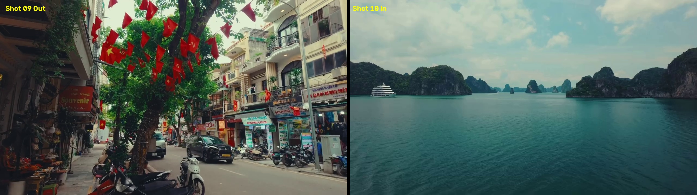
• Kỹ thuật Mồi (Out): Thuyền di chuyển ngang chậm rãi mang lại cảm giác tĩnh tại, kỳ vĩ vô tận.
• Kỹ thuật Nối (In): Sang Cảnh 11: Aerial Perspective Cut (Từ mặt nước vịnh chuyển sang góc nhìn Flycam trên đỉnh núi).
• Loại chuyển cảnh: Geological Wonder Cut / Horizon-to-Chasm Transition
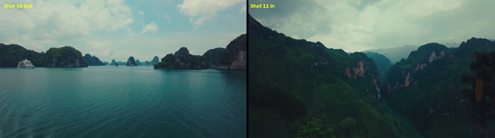
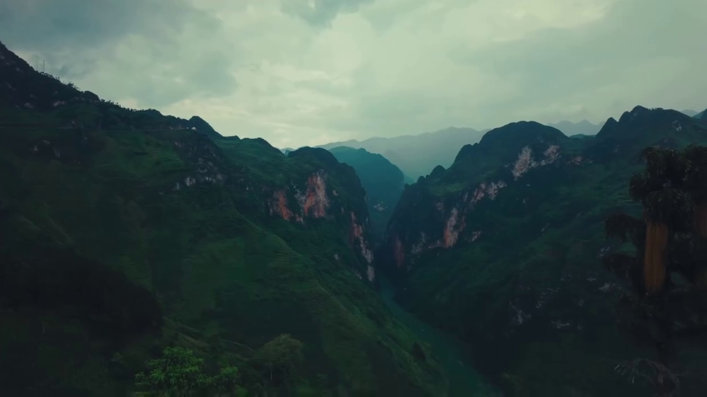
• Kỹ thuật Mồi (Out): Drone bay tiến về phía trước (Forward Push) xuyên qua khe núi tạo cảm giác choáng ngợp và bứt phá.
• Kỹ thuật Nối (In): Sang Cảnh 12: Scale Drop (Từ góc nhìn chim bay trên trời hạ thẳng xuống đời sống con người dưới chợ).
• Loại chuyển cảnh: Macro-to-Micro Spatial Jump Cut
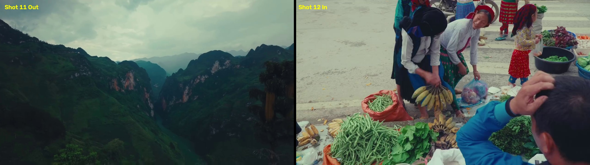
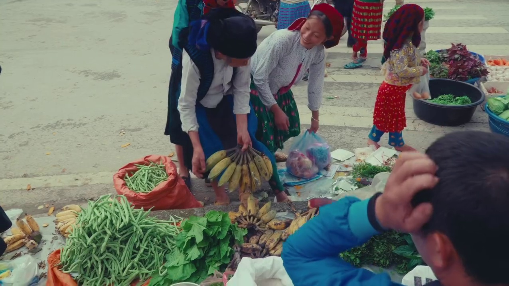
• Kỹ thuật Mồi (Out): Bàn tay chọn chuối và cử chỉ rôm rả của các bà mẹ vùng cao.
• Kỹ thuật Nối (In): Sang Cảnh 13: Color Transition (Từ màu sắc nông sản ban ngày chuyển sang ánh sáng đèn lồng rực rỡ ban đêm).
• Loại chuyển cảnh: Cultural Lifestyle Cut / Chromatic Contrast
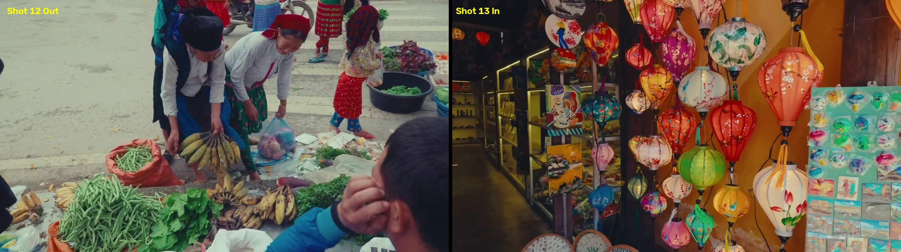
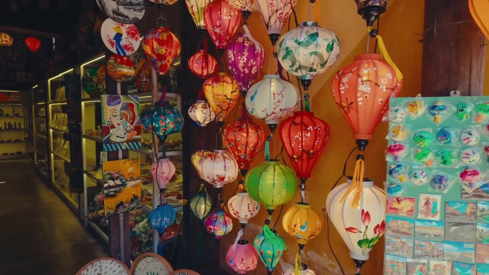
• Kỹ thuật Mồi (Out): Ánh sáng đèn lồng phát quang rực rỡ lấp đầy khung hình.
• Kỹ thuật Nối (In): Sang Cảnh 14: Sensory Shift (Từ thị giác ánh sáng đêm sang ẩm thực bốc khói).
• Loại chuyển cảnh: Luminescence Match Cut / Cultural Atmosphere Cut
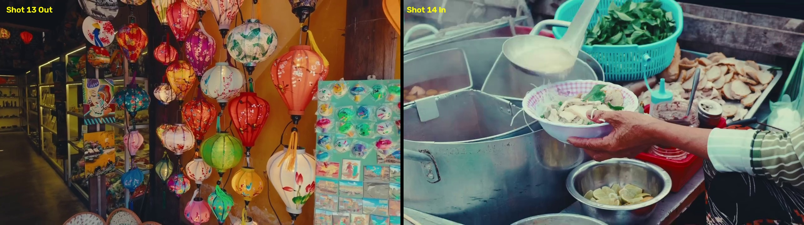
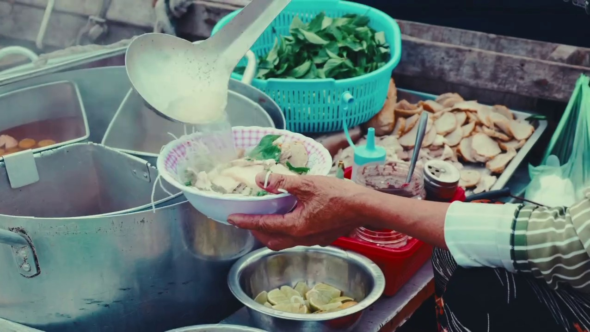
• Kỹ thuật Mồi (Out): Dòng nước dùng sôi chan vào tô phở tạo hiệu ứng kích thích vị giác cực mạnh (Appetite Hook).
• Kỹ thuật Nối (In): Sang Cảnh 15: Liquid-to-Liquid Match Cut (Từ dòng nước súp nóng sang làn nước thác mát lạnh bọt tung trắng xóa).
• Loại chuyển cảnh: Match Action / Fluid Dynamic Cut
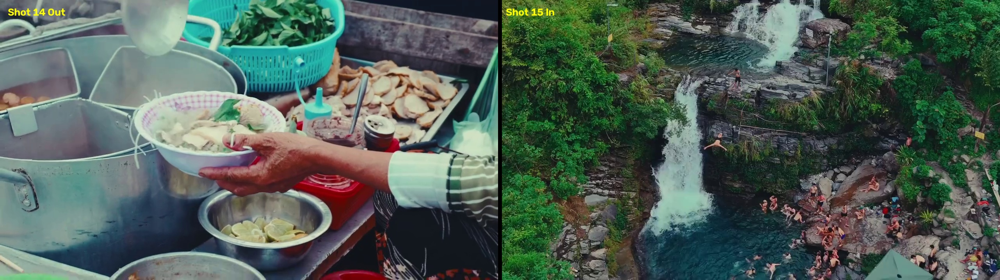
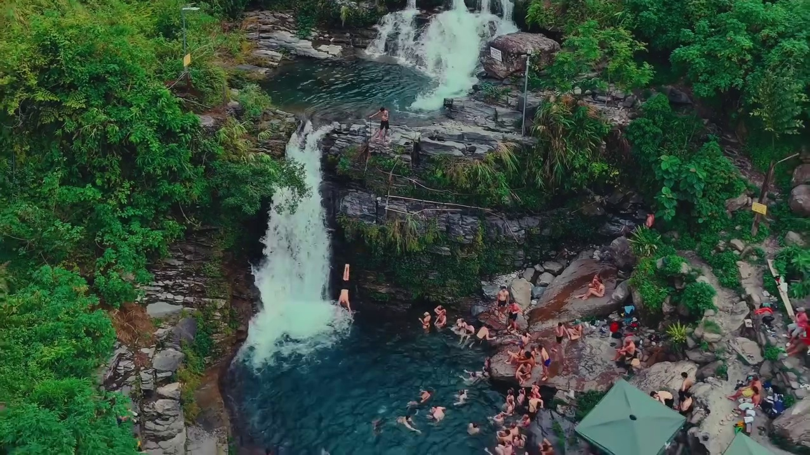
• Kỹ thuật Mồi (Out): Dòng nước thác đổ cuồn cuộn khép lại hành trình đầy năng lượng và tự do.
• Kỹ thuật Nối (In): Outro Loop (Kết thúc video, sẵn sàng lặp lại chu kỳ).
• Loại chuyển cảnh: Nature Climax / Visual Release & Infinite Loop
Bảng thông số máy quay, quy tắc ánh sáng và cẩm nang dựng phim giúp bạn tái hiện trọn vẹn chất cinematic du lịch của video mẫu:
• Thân máy (Camera): Sony FX30 / A6700 / A7C II, Fujifilm X-T5 / X-H2S hoặc iPhone 15/16 Pro (Blackmagic Camera App).
• Ống kính (Lens): Bộ đôi Zoom đa dụng 24-70mm f/2.8 kết hợp Prime 50mm f/1.4 hoặc 85mm f/1.8 để chụp chân dung cảm xúc.
• Flycam & Gimbal: DJI Mini 4 Pro / Mavic 3 Pro + Gimbal DJI RS3 / RS4 mini.
• Kính lọc: Polarizer (CPL) bắt buộc để quay nước biển/sông ngọc bích + Variable ND (VND) quay trời nắng gắt.
• Frame Rate: 24 fps (chuẩn Cinematic) cho các cảnh phố xá, xe chạy; 60 fps / 120 fps cho các cảnh slow-motion (nước chan phở, nụ cười em bé, tắm thác).
• Shutter Speed: Quy tắc 180° (1/50s khi quay 24fps, 1/120s khi quay 60fps) để giữ motion blur tự nhiên.
• Picture Profile: Log Profile (S-Log3, F-Log2, D-Log) để giữ dải dynamic range cao nhất giữa nắng gắt và vùng tối khe núi.
• Tone màu chủ đạo: Warm Heritage Gold kết hợp Emerald Green (Sắc vàng Hội An ấm áp + Xanh ngọc bích Sông Nho Quế/Vịnh Hạ Long + Đỏ thắm cờ Tổ quốc).
• Highlight & Shadow: Nén highlight mượt mà (soft roll-off), giữ shadow sâu nhưng không bết đen chi tiết.
• Film Emulation: Thêm 10-15% hạt phim 35mm (Kodak 250D) để tăng độ vintage cổ điển.
• Beat Syncing: Đặt marker nhịp trống trên timeline. Cắt chính xác mỗi cảnh đúng 1 nhịp (0.96s - 1.13s).
• Cấu trúc Hook: Giữ cảnh đầu 4.9s làm khoảng lặng trước khi dồn dập giải phóng năng lượng.
• Foley Sound: Lồng ghép tiếng gió đèo, tiếng sáo trúc, tiếng nước rẽ thuyền nan, tiếng xèo xèo nước dùng để chạm đến đa giác quan.